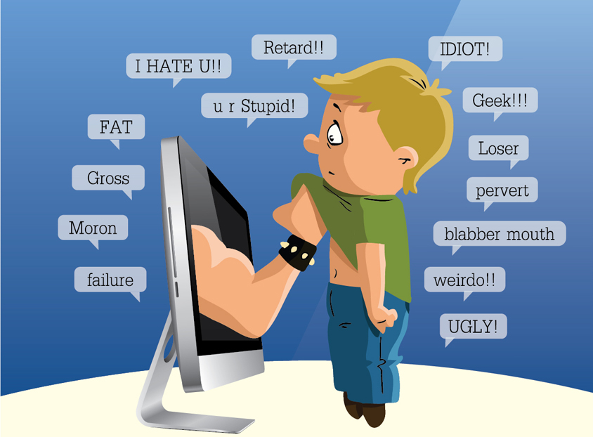

See examples of this type of crime below.
Examples of this type of crime are listed below.
 Don’t respond or retaliate. Sometimes a reaction is exactly what aggressors are looking for because they think it gives them power over you, and you don’t want to empower a bully. Reach out for help – especially if the behavior’s really getting to you. You deserve backup. See if there’s someone who can listen, help you process what’s going on and work through it – a friend, relative or maybe an adult you trust. Internet threats
 Never tell anyone your passwords or write them down. Dont use easy passwords like birthdays and anniversaries. Update your operating system and software frequently. Download up-to-date security programs, including anti-malware software with multiple technologies for protecting against spyware, ransomware, and exploits, as well as a firewall.
Never tell anyone your passwords or write them down. Dont use easy passwords like birthdays and anniversaries. Update your operating system and software frequently. Download up-to-date security programs, including anti-malware software with multiple technologies for protecting against spyware, ransomware, and exploits, as well as a firewall.
 Follow good security practices when it comes to maintaining your contact or email lists. Avoid opening email attachments, especially if they are from people you don't know.
Follow good security practices when it comes to maintaining your contact or email lists. Avoid opening email attachments, especially if they are from people you don't know.